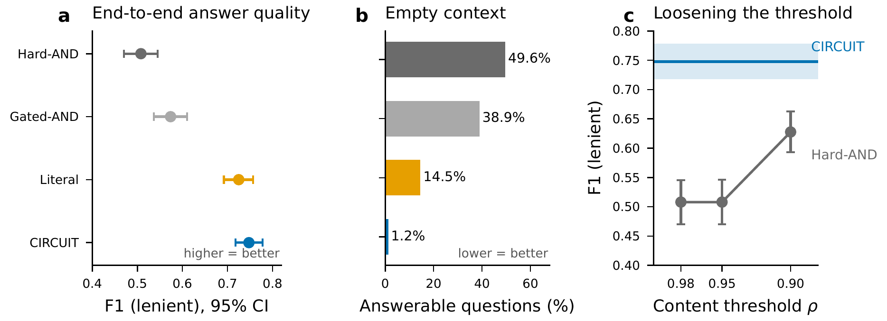
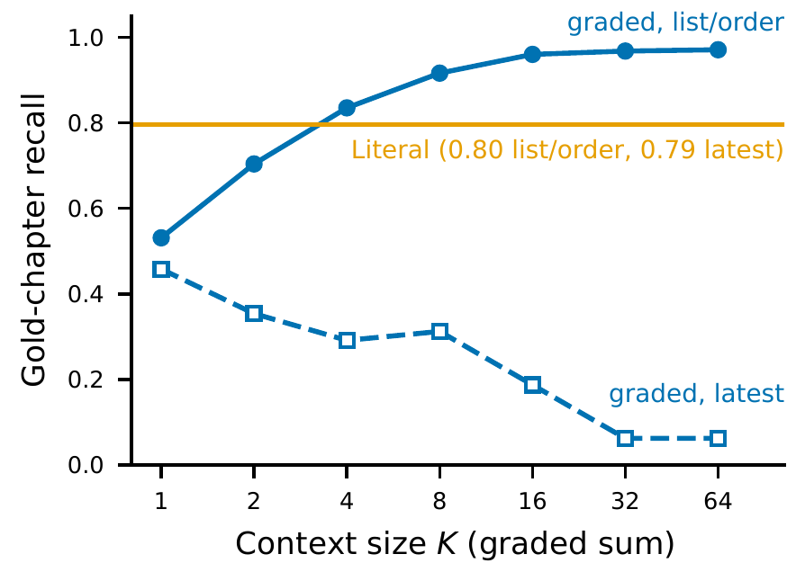
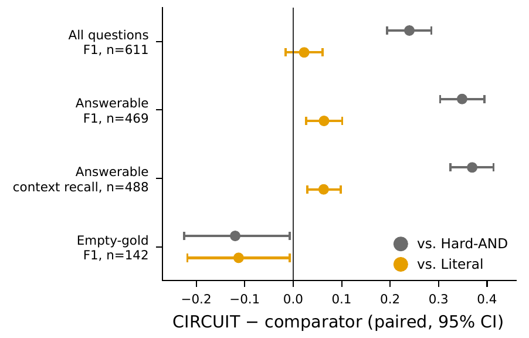

What Makes Structured Episodic Retrieval Robust to Noisy Query Cues?
A Controlled Study
Under review · ACL submission
Abstract
Structured memories for LLM agents index events by time, place, entity and topic, and answer a query by intersecting the matches on each axis. Intersection fails when an LLM extracts the events and the query cues, because one weak axis removes the right memory. We run a controlled study of retrieval rules on EPBench and LoCoMo. Hard intersection returns nothing for 63% of EPBench questions, and adding up the per-axis matches instead recovers most of the loss. How best to add them up depends on what the answer does with the retrieved set. A ranked top-K set helps questions that list events but hurts questions that ask for the most recent event, and routing those questions to a selective rule recovers the retrieval loss. Cue confidence is informative, yet as a single weight per axis it cannot change the result in most cases and leaves retrieval and answer accuracy essentially unchanged.
On LoCoMo, matching the speaker, which is metadata, raises answer accuracy over dense retrieval by 7.9 points ([6.0, 9.9]; 7.0 for the full score), while turning the topic score into a yes-or-no indicator, or choosing the weights on other conversations, makes no detectable difference. All results carry paired bootstrap intervals, and our conclusions are limited to these two benchmarks.
Four findings
- Hard intersection breaks down. It returns nothing for 63.2% of EPBench questions and for 49.6% of those that have an answer. Adding up the matches instead (Literal) gains +0.217 F1, and lowering the content threshold to 0.90 does not close the gap.
- The combination rule has to fit the question. A ranked top-K set raises gold-chapter recall on list and order questions (+0.116), but drops it on “latest” questions (−0.479), because later non-answer events slip in. Routing “latest” questions to Literal recovers the loss.
- Confidence tracks correctness but changes almost nothing. Wrong time cues average 0.14 against 0.99 for right ones after calibration, yet calibrated, raw and no confidence are indistinguishable: the retrieved set changes for only 41 of 668 questions. A single weight per axis provably cannot reorder single-axis queries or change the Literal set (Proposition 1).
- Efficiency, measured again. The index cuts the cells to score by 90.3% on EPBench, and scoring only the candidates is about 3× faster than a flat scan — both small next to the 7.7 ms needed to embed a new cue string.
Reference
Anonymous authors. What Makes Structured Episodic Retrieval Robust to Noisy Query Cues? A Controlled Study. Under review, 2026.
BibTeX citation
@misc{anonymous2026structured,
title = {What Makes Structured Episodic Retrieval Robust to Noisy
Query Cues? A Controlled Study},
author = {Anonymous},
note = {Under review},
year = {2026}
}
Method
A query constrains some axes — time, place, entity, topic or persona (the speaker). For each such axis k an LLM extracts a cue Ck and a self-reported confidence, which per-axis isotonic regression turns into Confk, the estimated probability that the cue is right. A two-tier memory stores the cells (events on EPBench, dialogue turns on LoCoMo) in Tier 2, and flat inverted index maps from cue values to cells in Tier 1. Every candidate cell e gets a graded match mk(e) ∈ [0, 1] per axis, and a rule combines the matches. We compare four rules on the same candidates, cues and judge:
| Rule | Keeps a cell when… | Uses confidence? |
|---|---|---|
| Hard-AND (STEM / ARTEM) | mk(e) ≥ ρk on every queried axis | no |
| Gated-AND | same, but only over axes with Confk ≥ γ | as a gate |
| Literal | S(e) = Σk Confk · 1[mk(e) ≥ ρk] > 0 | as a weight |
| Graded (CIRCUIT) | top-K by S(e) = Σk Confk · mk(e) | as a weight |
Thresholds follow the published values ρ = (1.0, 0.99, 0.99, 0.98) for time, place, entity and content; γ = 0.75 and K = 8. For “latest” questions the protocol answers with the time-latest kept cell; otherwise all kept cells are returned in time order.
Results
| Rule | EPBench Book 1 | LoCoMo | ||||
|---|---|---|---|---|---|---|
| Empty (%) | F1 | Recall list/order | Recall latest | Gold in ctx. (%) | QA acc. (%) | |
| Dense retrieval | 0.0 | – | 0.518 | 0.042 | 77.4 | 72.5 |
| Hard-AND | 63.2 | 0.508 | 0.486 | 0.271 | – | – |
| Gated-AND | 55.2 | 0.574 | 0.549 | 0.667 | – | – |
| Literal | 31.3 | 0.725 | 0.800 | 0.792 | – | – |
| Graded (CIRCUIT) | 1.0 | 0.748 | 0.916 | 0.312 | 89.6 | 79.5 |
| Router: latest → Literal, else Graded | 3.1 | – | 0.916 | 0.792 | – | – |
Table 1 (excerpt): controlled comparison of retrieval rules. F1 on 611 judge-valid EPBench questions; recall is gold-chapter recall without a judge (440 list/order, 48 latest answerable questions); LoCoMo on 1,536 questions. Dashes: not run. Full table with confidence variants and intervals in the paper.




